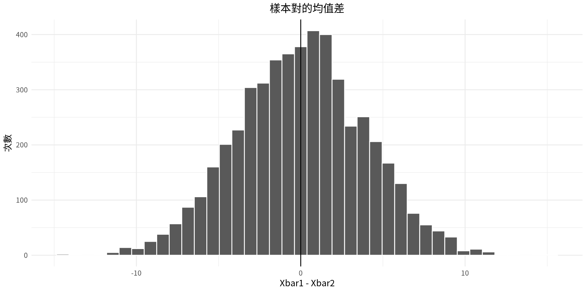
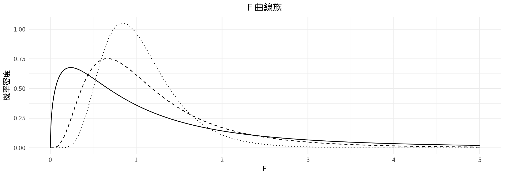

統計學
第9章：兩個均值、兩個比例與兩個變異數的差異檢定
實踐大學
2026-10-08
本章概覽
第9章把假設檢定從單一參數推廣到兩個參數的比較——兩個均值、兩個比例或兩個變異數——並沿用第8章的五步驟程序。
| 節次 | 主題 |
|---|---|
| 9-1 | 比較兩個參數；獨立樣本與相依樣本；樣本均值差 \bar{X}_1 - \bar{X}_2 的分布 |
| 9-2 | \sigma 已知時兩均值的 z 檢定；檢定特定差異；\mu_1 - \mu_2 的信賴區間 |
| 9-3 | \sigma 未知時獨立樣本的 t 檢定；自由度取法；合併變異數；t 信賴區間 |
本章概覽（續）
| 節次 | 主題 |
|---|---|
| 9-4 | 相依（配對）樣本；以 \bar{D}、s_D 的 t 檢定；程序表；\mu_D 的信賴區間 |
| 9-5 | 兩比例的 z 檢定；加權估計 \bar{p}、\bar{q}；p_1 - p_2 的信賴區間 |
| 9-6 | F 分布；兩變異數的 F 檢定；分子與分母自由度；使用時的注意事項 |
本章學習目標
讀完本章後，你應該能夠
- 使用 z 檢定來檢定兩個均值之差。
- 使用 t 檢定來檢定兩個獨立樣本均值之差。
- 檢定兩個相依樣本均值之差。
- 檢定兩個比例之差。
- 檢定兩個變異數或標準差之差。
第 9-1 節：兩個參數之差的檢定
比較兩個群體
第8章是把單一的樣本均值、變異數或比例拿來和某個特定的母體數值比較。但研究者往往想比較的是兩個群體——實驗組與對照組、兩個品牌的巴士輪胎、兩種肥料、兩種止咳糖漿。
假設有位研究者問：在社區學院就讀護理系的學生，其平均年齡是否和在大學就讀護理系的學生不同？ 研究者關心的不是全體護理新生的平均年齡，而是比較兩個群體的均值。
陳述假設的兩種等價寫法
H_0:\ \mu_1 = \mu_2 \qquad H_1:\ \mu_1 \neq \mu_2
或等價地寫成
H_0:\ \mu_1 - \mu_2 = 0 \qquad H_1:\ \mu_1 - \mu_2 \neq 0
若兩個母體均值沒有差異，相減即為零；若有差異，相減就會得到非零的數。兩種寫法都正確，本書在假設差異為零時採用第一種寫法。
均值與比例的假設
同樣的推理也適用於比例。若研究者認為每週工作超過 5 天的男性勞工百分比與女性勞工百分比不同，則假設為 H_0:\ p_1 = p_2 與 H_1:\ p_1 \neq p_2（或 H_0:\ p_1 - p_2 = 0 與 H_1:\ p_1 - p_2 \neq 0）。
雙尾、右尾與左尾的寫法
| 檢定 | 均值 | 比例 |
|---|---|---|
| 雙尾 | H_0:\ \mu_1 = \mu_2；H_1:\ \mu_1 \neq \mu_2 | H_0:\ p_1 = p_2；H_1:\ p_1 \neq p_2 |
| 右尾 | H_0:\ \mu_1 = \mu_2；H_1:\ \mu_1 > \mu_2 | H_0:\ p_1 = p_2；H_1:\ p_1 > p_2 |
| 左尾 | H_0:\ \mu_1 = \mu_2；H_1:\ \mu_1 < \mu_2 | H_0:\ p_1 = p_2；H_1:\ p_1 < p_2 |
獨立樣本與相依樣本
獨立樣本
當第一個樣本所抽取的受試者完全不會影響第二個樣本受試者的抽取方式時，這兩個樣本就是獨立樣本。
例： 將 50 人隨機分成兩組各 25 人以檢驗新藥，一組服藥、另一組服用安慰劑。
相依樣本
當第一組受試者的選取會以某種方式影響另一組受試者的選取時，這兩個樣本就是相依樣本。
例： 想知道一個人的右腳是否略大於左腳；一旦某人的右腳被選入樣本 1，同一個人的左腳就必須選入樣本 2。
均值差的分布
檢定兩均值之差的理論基礎，是選取成對的樣本並比較每一對樣本的均值。母體均值不需要事先知道。
從母體中取出所有可能的樣本對，計算每一對的均值並相減，再把這些差畫成圖。若兩個母體的均值相同，大多數的差會是零或接近零，只有少數因隨機因素而出現較大的差，有正有負。所得的曲線形狀像常態分布，且均值為零（圖 9-1）。
檢定統計量的通式
\text{Test statistic} = \frac{(\text{observed value}) - (\text{expected value})}{\text{standard error}}
本章所有的檢定——兩均值、兩比例，以及（形式稍異的）兩變異數——都是這個通式的特例。
以 R 呈現均值差的分布
繪圖 ——模擬圖 9-1：重複從均值相同的兩個母體各抽一個樣本，並畫出 \bar{X}_1 - \bar{X}_2。

這些差集中在零附近：當 \mu_1 = \mu_2 時，僅憑機遇不太可能出現離零很遠的差，這正是檢定能夠運作的原因。
第 9-2 節：兩均值之差的檢定：使用 z 檢定
z 檢定的假設條件
以 z 檢定判斷兩均值之差的假設條件
- 兩個樣本都是隨機樣本。
- 兩個樣本必須彼此獨立——各樣本受試者之間不能有任何關聯。
- 兩個母體的標準差必須已知；若樣本數小於 30，母體必須呈常態或近似常態分布。
本書會在習題中載明這些假設條件；在其他情境中，必須先確認條件成立才能進行檢定。
兩均值 z 檢定的公式
比較兩個獨立母體均值的 z 檢定
z = \frac{(\bar{X}_1 - \bar{X}_2) - (\mu_1 - \mu_2)}{\sqrt{\dfrac{\sigma_1^2}{n_1} + \dfrac{\sigma_2^2}{n_2}}}
分母是差的標準誤，因為 \bar{X}_1 - \bar{X}_2 的變異數是兩者變異數之和：
\sigma^2_{\bar{X}_1 - \bar{X}_2} = \sigma^2_{\bar{X}_1} + \sigma^2_{\bar{X}_2} = \frac{\sigma_1^2}{n_1} + \frac{\sigma_2^2}{n_2}
其中 \bar{X}_1 - \bar{X}_2 是觀測值，\mu_1 - \mu_2 是期望值；當 H_0:\ \mu_1 = \mu_2 時期望值為零。
兩種檢定程序
傳統法
| 步驟 | 作法 |
|---|---|
| 1 | 陳述假設並指出宣稱。 |
| 2 | 找出臨界值。 |
| 3 | 計算檢定統計量。 |
| 4 | 做出決策。 |
| 5 | 總結結果。 |
P 值法
| 步驟 | 作法 |
|---|---|
| 1 | 陳述假設並指出宣稱。 |
| 2 | 計算檢定統計量。 |
| 3 | 求出 P 值。 |
| 4 | 做出決策。 |
| 5 | 總結結果。 |
臨界值與第 8-2 節所用的完全相同。
範例 9-1
不同通路的平均訂單金額
台北某電商平台想比較透過行動 App 下單與透過網站下單的平均訂單金額。隨機抽取 40 筆 App 訂單與 40 筆網站訂單，平均訂單金額分別為 NT$1685 與 NT$1512。依多年交易紀錄，母體標準差取 App 訂單 NT$320、網站訂單 NT$285。在 \alpha = 0.05 下，能否斷定兩個通路的平均訂單金額有顯著差異？（模擬資料）
App Website
Sample mean 1685 1512
sigma 320 285
n 40 40回到 範例 9-3
範例 9-1
解題
步驟 1. 陳述假設並指出宣稱。
H_0:\ \mu_1 = \mu_2 \qquad H_1:\ \mu_1 \neq \mu_2 \ \textit{(claim)}
步驟 2. 找出臨界值。\alpha = 0.05 且為雙尾檢定，臨界值為 -1.96 與 +1.96。
步驟 3. 計算檢定統計量。
z = \frac{(1685 - 1512) - 0}{\sqrt{\dfrac{320^2}{40} + \dfrac{285^2}{40}}} = \frac{173}{67.75} = 2.55
範例 9-1
範例 9-2
每張訂單的揀貨品項數
某物流公司推測，桃園配送中心每張訂單的平均揀貨品項數多於台中配送中心。下表為兩個中心各隨機抽取 50 張訂單的資料。在 \alpha = 0.10 下，是否有足夠證據支持此宣稱？假設 \sigma_1 與 \sigma_2 = 4。請用 P 值法。（模擬資料）
Taoyuan Taichung
14 6 16 7 18 13 10 16 10 10
10 13 14 7 11 9 13 8 9 16
18 10 15 16 11 11 17 12 8 14
15 5 7 11 15 8 16 5 8 6
6 15 16 13 9 8 13 7 16 14
14 15 14 7 19 12 12 18 14 18
16 6 10 6 17 16 15 12 7 11
14 13 11 22 19 20 7 9 14 8
8 13 11 15 13 11 11 16 15 15
10 14 11 10 14 13 12 15 7 5範例 9-2
解題
步驟 1. 陳述假設並指出宣稱。
H_0:\ \mu_1 = \mu_2 \qquad H_1:\ \mu_1 > \mu_2 \ \textit{(claim)}
步驟 2——計算檢定統計量。 先求出各組資料的均值。
taoyuan <- c(14, 6, 16, 7, 18, 10, 13, 14, 7, 11,
18, 10, 15, 16, 11, 15, 5, 7, 11, 15,
6, 15, 16, 13, 9, 14, 15, 14, 7, 19,
16, 6, 10, 6, 17, 14, 13, 11, 22, 19,
8, 13, 11, 15, 13, 10, 14, 11, 10, 14)
taichung <- c(13, 10, 16, 10, 10, 9, 13, 8, 9, 16,
11, 17, 12, 8, 14, 8, 16, 5, 8, 6,
8, 13, 7, 16, 14, 12, 12, 18, 14, 18,
16, 15, 12, 7, 11, 20, 7, 9, 14, 8,
11, 11, 16, 15, 15, 13, 12, 15, 7, 5)
mean(taoyuan)[1] 12.4[1] 11.8範例 9-2
解題
步驟 2（續）. 以 \bar{X}_1 = 12.4、\bar{X}_2 = 11.8 及 \sigma_1 = \sigma_2 = 4 代入，
z = \frac{(12.4 - 11.8) - 0}{\sqrt{\dfrac{4^2}{50} + \dfrac{4^2}{50}}} = 0.75
步驟 3. 求 P 值。z = 0.75 左側的面積為 0.7734，1.0000 - 0.7734 = 0.2266。
步驟 4. P 值大於 \alpha（0.2266 > 0.10），故不拒絕 H_0。
步驟 5. 在 0.10 顯著水準下，沒有足夠證據支持「桃園配送中心每張訂單的揀貨品項數多於台中配送中心」這項宣稱。
檢定特定的差異
研究者有時要檢定的均值差不是零。例如研究者可能推測社區學院的護理系學生平均比大學的護理系學生年長 3.2 歲：
H_0:\ \mu_1 - \mu_2 = 3.2 \qquad H_1:\ \mu_1 - \mu_2 > 3.2
假設的差異值
z 檢定的公式不變；分子中的 \mu_1 - \mu_2 就是假設的差異值（期望值）。此例中代入的是 \mu_1 - \mu_2 = 3.2 而非 0。
\mu_1 - \mu_2 的信賴區間（\sigma_1 與 \sigma_2 已知）
兩均值之差的 z 信賴區間
(\bar{X}_1 - \bar{X}_2) - z_{\alpha/2}\sqrt{\frac{\sigma_1^2}{n_1}+\frac{\sigma_2^2}{n_2}} < \mu_1-\mu_2 < (\bar{X}_1 - \bar{X}_2) + z_{\alpha/2}\sqrt{\frac{\sigma_1^2}{n_1}+\frac{\sigma_2^2}{n_2}}
當假設的差異為零時：若信賴區間包含零，不拒絕 H_0；若不包含零，則拒絕 H_0。
範例 9-3
不同通路的平均訂單金額
求 範例 9-1 中兩均值之差的 95% 信賴區間。
範例 9-3
解題
代入公式，取 z_{\alpha/2} = 1.96。
(1685 - 1512) \pm 1.96\sqrt{\dfrac{320^2}{40} + \dfrac{285^2}{40}} = 173 \pm 132.80
40.20 < \mu_1 - \mu_2 < 305.80
[1] 132.7957[1] 40.2043[1] 305.7957由於信賴區間不包含零，決策是拒絕 H_0，與範例 9-1 的結論一致。
第 9-3 節：兩均值之差的檢定（獨立樣本）
當母體標準差未知時
第 9-2 節在母體標準差已知時使用 z 檢定。但許多情況下這個條件無法滿足。此時改用 t 檢定：兩個樣本彼此獨立，且取自常態或近似常態分布的兩個母體。
獨立樣本
當兩個樣本彼此沒有關聯時，就是獨立樣本。本節同時假設兩個變異數並不相等。
t 檢定的公式（獨立樣本）
兩獨立樣本均值之差的 t 檢定
假設變異數不相等：
t = \frac{(\bar{X}_1 - \bar{X}_2) - (\mu_1 - \mu_2)}{\sqrt{\dfrac{s_1^2}{n_1} + \dfrac{s_2^2}{n_2}}}
其中自由度取 n_1 - 1 與 n_2 - 1 之中較小者。
分母是兩均值之差的標準誤；未知的 \sigma_1 與 \sigma_2 以 s_1 與 s_2 取代。
t 檢定的假設條件
\sigma_1 與 \sigma_2 未知時兩獨立樣本均值 t 檢定的假設條件
- 樣本為隨機樣本。
- 樣本資料彼此獨立。
- 當樣本數小於 30 時，母體必須呈常態或近似常態分布。
檢定程序與第 9-2 節的五個步驟相同；公式改用 s_1 與 s_2，臨界值取自 t 分布。
範例 9-4
不同店型的月營收
某連鎖咖啡品牌想了解街邊店與商場櫃位的平均月營收是否有差異。兩種店型各隨機抽取 10 家門市。街邊店的平均月營收為 NT$854 千元，商場櫃位為 NT$814 千元，兩樣本的標準差分別為 NT$52 千元與 NT$61 千元。在 \alpha = 0.05 下，能否斷定兩個樣本的均值有差異？假設變數呈常態分布。（模擬資料）
Street-level Mall counter
Sample mean 854 814
s 52 61
n 10 10回到 範例 9-5
範例 9-4
解題
步驟 1. 陳述假設並指出宣稱。
H_0:\ \mu_1 = \mu_2 \qquad H_1:\ \mu_1 \neq \mu_2 \ \textit{(claim)}
步驟 2. 找出臨界值。雙尾檢定且 \alpha = 0.05。自由度取 n_1 - 1 與 n_2 - 1 中較小者；兩者皆為 10 - 1 = 9，故臨界值為 +2.262 與 -2.262。
步驟 3. 求檢定統計量。
t = \frac{(854 - 814) - 0}{\sqrt{\dfrac{52^2}{10} + \dfrac{61^2}{10}}} = \frac{40}{25.348} = 1.578
範例 9-4
\mu_1 - \mu_2 的信賴區間（\sigma_1 與 \sigma_2 未知）
兩獨立樣本均值之差的信賴區間
假設變異數不相等：
(\bar{X}_1 - \bar{X}_2) - t_{\alpha/2}\sqrt{\frac{s_1^2}{n_1}+\frac{s_2^2}{n_2}} < \mu_1-\mu_2 < (\bar{X}_1 - \bar{X}_2) + t_{\alpha/2}\sqrt{\frac{s_1^2}{n_1}+\frac{s_2^2}{n_2}}
其中 \text{d.f.} = n_1 - 1 與 n_2 - 1 中較小者。
範例 9-5
不同店型的月營收
求 範例 9-4 資料的 95% 信賴區間。
範例 9-5
解題
代入公式，以 \text{d.f.} = 9 取 t_{\alpha/2} = 2.262。
(854 - 814) \pm 2.262\sqrt{\dfrac{52^2}{10} + \dfrac{61^2}{10}} = 40 \pm 57.34
-17.34 < \mu_1 - \mu_2 < 97.34
[1] 57.34022[1] -17.34022[1] 97.34022由於區間包含 0，沒有足夠證據支持兩個均值有差異的宣稱。
統計軟體所用的自由度
Welch 自由度
許多統計軟體以下式計算此 t 檢定的自由度：
\text{d.f.} = \frac{\left(\dfrac{s_1^2}{n_1} + \dfrac{s_2^2}{n_2}\right)^2}{\dfrac{(s_1^2/n_1)^2}{n_1 - 1} + \dfrac{(s_2^2/n_2)^2}{n_2 - 1}}
本書不使用這個公式。 本書一律取 n_1 - 1 與 n_2 - 1 中較小者，這是較保守的作法。
變異數的合併估計
假設變異數相等時的 t 檢定
t = \frac{(\bar{X}_1 - \bar{X}_2) - (\mu_1 - \mu_2)}{\sqrt{\dfrac{(n_1-1)s_1^2 + (n_2-1)s_2^2}{n_1 + n_2 - 2}}\sqrt{\dfrac{1}{n_1}+\dfrac{1}{n_2}}}\qquad \text{d.f.} = n_1 + n_2 - 2
變異數的合併估計
變異數的合併估計是以兩個樣本變異數各自的自由度為權數，對兩個樣本變異數取加權平均。
如何在兩種 t 檢定之間取捨
注意
t 檢定有兩種版本：一種用於母體變異數不相等，另一種用於變異數相等。要判斷兩個樣本變異數是否相等，研究者可以使用 F 檢定（第 9-6 節）。
然而統計學家並非都同意先做 F 檢定再做 t 檢定：在同一顯著水準下連做 F 與 t 檢定，會改變 t 檢定的整體顯著水準。因此本書全書都假設 \sigma_1 \neq \sigma_2。
在 R 中執行兩樣本 t 檢定
比較課本的保守自由度與 t.test() 所用的 Welch 自由度，以範例 9-4 的摘要統計量為起點。
[1] 17.56003[1] 0.1490077[1] 0.1323959兩種作法的檢定統計量完全相同，只有自由度不同，因而 P 值略有差異。課本一律取 \text{d.f.} = 9，這是較保守的選擇。
第 9-4 節：兩均值之差的檢定：相依樣本
相依樣本
相依樣本
當受試者以某種方式配對或配類時，這兩個樣本就是相依樣本，有時也稱為配對樣本。
例如：同一群受試者服藥前後的前測與後測；補習前後的 SAT 分數；減重輔導計畫的前後體重。學生也可以依相關變數（例如智商）配對，每一對各分派到一組。配對可以排除外生變數，因而有助於降低型 II 誤差。
關於配對的兩項提醒
注意
- 依單一變數配對，並不能排除其他變數的影響。依智商配對並未控制受試者的數學能力或對電腦的熟悉程度。
- 同一群受試者用於前後測研究時，「知道自己正在參與研究」本身就可能影響結果——被選入特別計畫的人可能只是因為被選上而更有動機。
相依樣本的假設寫法
以 \mu_D 陳述假設
| 雙尾 | 左尾 | 右尾 |
|---|---|---|
| H_0:\ \mu_D = 0 | H_0:\ \mu_D = 0 | H_0:\ \mu_D = 0 |
| H_1:\ \mu_D \neq 0 | H_1:\ \mu_D < 0 | H_1:\ \mu_D > 0 |
其中 \mu_D 是配對差的期望均值，且 D = X_1 - X_2。
假設條件與公式
相依樣本兩均值 t 檢定的假設條件
- 樣本為隨機樣本。
- 樣本資料是相依的。
- 當樣本數小於 30 時，母體必須呈常態或近似常態分布。
相依樣本 t 檢定的公式
t = \frac{\bar{D} - \mu_D}{s_D/\sqrt{n}} \qquad \text{d.f.} = n - 1
\bar{D} = \frac{\sum D}{n} \qquad s_D = \sqrt{\frac{n\sum D^2 - \left(\sum D\right)^2}{n(n-1)}}
程序表
相依樣本均值之差的檢定
| 步驟 | 作法 |
|---|---|
| 1 | 陳述假設並指出宣稱。 |
| 2 | 找出臨界值。 |
| 3 | 計算檢定統計量（見下方 a–f）。 |
| 4 | 做出決策。 |
| 5 | 總結結果。 |
步驟 3 的細節。 (a) 製表，欄位為 X_1、X_2、A = D = X_1 - X_2、B = D^2 = (X_1 - X_2)^2。(b) 求各對的差並填入 A 欄。(c) 求差的均值 \bar{D} = \sum D / n。(d) 將差平方後填入 B 欄。(e) 求 s_D。(f) 求檢定統計量 t = (\bar{D} - \mu_D)/(s_D/\sqrt{n})，\text{d.f.} = n - 1。
範例 9-6
相隔三年的門市營收
隨機抽取某手搖飲連鎖品牌的九家門市，列出其三年前與今日的平均月營收（單位：NT$ 百萬元）。在 \alpha = 0.05 下，能否斷定這些門市今日的平均月營收高於三年前？假設變數呈常態分布。（模擬資料）
Outlet 1 2 3 4 5 6 7 8 9
3 years ago 7.00 3.40 3.90 3.50 4.00 3.30 4.00 5.30 3.90
Today 5.20 3.80 6.40 2.90 7.10 4.50 8.20 3.30 6.80範例 9-6
解題
步驟 1. 陳述假設並指出宣稱。若營收確實增加，三年前的營收必須顯著低於今日，因此差的均值必須小於零。
H_0:\ \mu_D = 0 \qquad H_1:\ \mu_D < 0 \ \textit{(claim)}
步驟 2. 找出臨界值。自由度為 n - 1 = 9 - 1 = 8；左尾檢定且 \alpha = 0.05，臨界值為 -1.860。
步驟 3. 計算檢定統計量。由 \sum D = -9.90 與 \sum D^2 = 51.11，
\bar{D} = \frac{-9.90}{9} = -1.100 \qquad s_D = \sqrt{\frac{9(51.11) - (-9.90)^2}{9(8)}} = 2.242
t = \frac{-1.100 - 0}{2.242/\sqrt{9}} = -1.472
範例 9-6
解題 - 以 R 執行步驟 3
[1] 1.8 -0.4 -2.5 0.6 -3.1 -1.2 -4.2 2.0 -2.9[1] 3.24 0.16 6.25 0.36 9.61 1.44 17.64 4.00 8.41[1] -9.9[1] 51.11範例 9-6
範例 9-7
製程修訂前後的不良率
某品保工程師想了解修訂標準作業程序後，產線的批次不良率是否會改變。隨機選取六條產線先測量修訂前的不良率，接著以新程序運轉六週後再測一次。結果如下表（單位：每千件的不良數）。在 \alpha = 0.10 下，能否斷定不良率已經改變？假設變數呈近似常態分布。（模擬資料）
Line 1 2 3 4 5 6
Before (X1) 34 28 41 37 25 30
After (X2) 28 26 42 29 24 31回到 範例 9-8
範例 9-7
解題
步驟 1. 陳述假設並指出宣稱。若新程序有效，修訂前的不良率應與修訂後不同。
H_0:\ \mu_D = 0 \qquad H_1:\ \mu_D \neq 0 \ \textit{(claim)}
步驟 2. 找出臨界值。自由度為 6 - 1 = 5；\alpha = 0.10 時臨界值為 \pm 2.015。
步驟 3. 計算檢定統計量。由 \sum D = 15 與 \sum D^2 = 107，
\bar{D} = \frac{15}{6} = 2.500 \qquad s_D = \sqrt{\frac{6(107) - 15^2}{6(5)}} = \sqrt{\frac{642 - 225}{30}} = 3.728
t = \frac{2.500 - 0}{3.728/\sqrt{6}} = 1.643
範例 9-7
範例 9-7
假設一個特定的差異值
若假設的差異為某個特定值，公式不變，只是把 \mu_D 換成該值。例如營養師宣稱採用某種飲食法的人一週平均減重 3 磅，則假設為
H_0:\ \mu_D = 3 \qquad H_1:\ \mu_D \neq 3
並在檢定統計量中以 3 代入 \mu_D。
差之均值的信賴區間
\mu_D 的信賴區間
\bar{D} - t_{\alpha/2}\frac{s_D}{\sqrt{n}} < \mu_D < \bar{D} + t_{\alpha/2}\frac{s_D}{\sqrt{n}} \qquad \text{d.f.} = n - 1
範例 9-8
製程修訂前後的不良率
求 範例 9-7 資料的 90% 信賴區間。
範例 9-8
解題
代入公式，以 \text{d.f.} = 5 取 t_{\alpha/2} = 2.015。
2.500 \pm 2.015\cdot\frac{3.728}{\sqrt{6}} = 2.500 \pm 3.07
-0.57 < \mu_D < 5.57
[1] 3.067025[1] -0.5670245[1] 5.567025由於區間包含 0，決策是不拒絕 H_0:\ \mu_D = 0；沒有足夠證據支持修訂後的程序會改變產線的不良率。
第 9-5 節：兩比例之差的檢定
樣本比例
回顧第 7 章，\hat{p}（讀作 p hat）是用來估計母體比例 p 的樣本比例。
樣本比例
\hat{p} = \frac{X}{n}
其中 X 是具有所關注特徵的單位數，n 是樣本數。
當檢定兩個母體比例 p_1 與 p_2 之差、且未假設特定差異時：
H_0:\ p_1 = p_2 \qquad H_1:\ p_1 \neq p_2
或等價地寫成 H_0:\ p_1 - p_2 = 0 與 H_1:\ p_1 - p_2 \neq 0。把對立假設改成 < 或 > 即得單尾檢定。
加權估計值 \bar{p}
p 的加權（合併）估計
由於 p_1 與 p_2 未知，改以加權估計值計算：
\bar{p} = \frac{n_1\hat{p}_1 + n_2\hat{p}_2}{n_1 + n_2} = \frac{X_1 + X_2}{n_1 + n_2} \qquad \bar{q} = 1 - \bar{p}
這個估計值建立在 p_1 = p_2 的假設之上；\bar{p} 同時用到兩個樣本的資訊，因此比單獨使用 \hat{p}_1 或 \hat{p}_2 更好。
以加權估計值表示的差之標準誤為
\sigma_{\hat{p}_1 - \hat{p}_2} = \sqrt{\bar{p}\,\bar{q}\left(\frac{1}{n_1}+\frac{1}{n_2}\right)}
公式與假設條件
比較兩比例的 z 檢定統計量
z = \frac{(\hat{p}_1 - \hat{p}_2) - (p_1 - p_2)}{\sqrt{\bar{p}\,\bar{q}\left(\dfrac{1}{n_1}+\dfrac{1}{n_2}\right)}}
其中 \ \bar{p} = \dfrac{X_1 + X_2}{n_1+n_2}、\ \bar{q} = 1 - \bar{p}、\ \hat{p}_1 = \dfrac{X_1}{n_1}、\ \hat{p}_2 = \dfrac{X_2}{n_2}。
兩比例 z 檢定的假設條件
- 樣本必須是隨機樣本。
- 樣本資料彼此獨立。
- 兩個樣本都要滿足 np \geq 5 與 nq \geq 5。
範例 9-9
兩種店型的行動支付比例
某零售集團想比較顧客在量販店與便利商店使用行動支付結帳的頻率。隨機抽取 45 筆量販店交易，其中 18 筆使用行動支付；隨機抽取 35 筆便利商店交易，其中 25 筆使用行動支付。在 \alpha = 0.05 下，檢定「兩種店型使用行動支付的比例沒有差異」這項宣稱。（模擬資料）
Hypermarket Convenience
Mobile-wallet payments 18 25
Transactions sampled 45 35回到 範例 9-11
範例 9-9
解題
步驟 1. 陳述假設並指出宣稱。
H_0:\ p_1 = p_2 \ \textit{(claim)} \qquad H_1:\ p_1 \neq p_2
步驟 2. 找出臨界值。\alpha = 0.05，臨界值為 +1.96 與 -1.96。
步驟 3. 計算檢定統計量。
\hat{p}_1 = \frac{18}{45} = 0.4000 \qquad \hat{p}_2 = \frac{25}{35} = 0.7143
\bar{p} = \frac{18+25}{45+35} = \frac{43}{80} = 0.5375 \qquad \bar{q} = 0.4625
z = \frac{(0.4000 - 0.7143) - 0}{\sqrt{(0.5375)(0.4625)\left(\dfrac{1}{45}+\dfrac{1}{35}\right)}} = \frac{-0.3143}{0.1124} = -2.80
範例 9-9
範例 9-9
解題
以 R 執行步驟 3（續） ——檢定統計量、臨界值與 P 值。
[1] -2.796886[1] -1.959964 1.959964[1] 0.005159768步驟 4. 因 -2.80 < -1.96（等同於 P = 0.0052 < \alpha = 0.05），拒絕 H_0。
步驟 5. 有足夠證據拒絕「兩種店型使用行動支付的比例沒有差異」這項宣稱。
範例 9-10
以 App 預訂旅館
一項針對 250 位隨機抽取的來台商務旅客的調查發現，72% 是透過行動 App 預訂旅館；另一個隨機抽取的 150 位休閒旅客樣本中，則有 60% 透過行動 App 預訂旅館。在 \alpha = 0.10 下，能否斷定透過 App 訂房的商務旅客比例高於休閒旅客比例？（模擬資料）
Business Leisure
Percentage 72% 60%
n 250 150範例 9-10
解題
步驟 1. 陳述假設並指出宣稱。
H_0:\ p_1 = p_2 \qquad H_1:\ p_1 > p_2 \ \textit{(claim)}
步驟 2. 找出臨界值。\alpha = 0.10 的右尾檢定，臨界值為 1.28。
步驟 3. 計算檢定統計量。題目給的是百分比，先還原次數：
X_1 = \hat{p}_1 n_1 = 0.72(250) = 180 \qquad X_2 = \hat{p}_2 n_2 = 0.60(150) = 90
\bar{p} = \frac{180+90}{250+150} = \frac{270}{400} = 0.675 \qquad \bar{q} = 0.325
z = \frac{(0.72 - 0.60) - 0}{\sqrt{(0.675)(0.325)\left(\dfrac{1}{250}+\dfrac{1}{150}\right)}} = \frac{0.12}{0.0484} = 2.48
範例 9-10
範例 9-10
p_1 - p_2 的信賴區間
兩比例之差的信賴區間
(\hat{p}_1-\hat{p}_2) - z_{\alpha/2}\sqrt{\frac{\hat{p}_1\hat{q}_1}{n_1}+\frac{\hat{p}_2\hat{q}_2}{n_2}} < p_1-p_2 < (\hat{p}_1-\hat{p}_2) + z_{\alpha/2}\sqrt{\frac{\hat{p}_1\hat{q}_1}{n_1}+\frac{\hat{p}_2\hat{q}_2}{n_2}}
注意
信賴區間使用的標準差建立在母體比例的估計值上，而假設檢定使用的標準差建立在兩個母體比例相等的假設上。因此兩種作法可能導出不同結論。檢定兩比例之差時，請以 z 檢定為準，而非信賴區間。
範例 9-11
兩種店型的行動支付比例
求 範例 9-9 資料中兩比例之差的 95% 信賴區間。
範例 9-11
解題
代入公式，取 \hat{p}_1 = 0.4000、\hat{q}_1 = 0.6000、\hat{p}_2 = 0.7143、\hat{q}_2 = 0.2857 及 z_{\alpha/2} = 1.96。
(0.4000 - 0.7143) \pm 1.96\sqrt{\dfrac{(0.4000)(0.6000)}{45} + \dfrac{(0.7143)(0.2857)}{35}} = -0.3143 \pm 0.207
-0.521 < p_1 - p_2 < -0.107
[1] 0.2070917[1] -0.5213774[1] -0.1071941區間完全落在零的左側，與範例 9-9 拒絕 H_0 的決策一致。
第 9-6 節：兩變異數之差的檢定
F 分布
統計學家也會比較兩個變異數或標準差——例如兩座城市月氣溫的變異。這類比較使用 F 檢定，它不同於第 8 章的卡方檢定：後者比較的是單一樣本變異數與某個特定母體變異數。
F 分布
若從兩個變異數相等（\sigma_1^2 = \sigma_2^2）的常態母體中各取一個獨立樣本，並以 s_1^2/s_2^2 比較兩個樣本變異數，則該比值的抽樣分布稱為 F 分布。
F 分布的特性
- F 值不可能為負，因為變異數恆為正或零。
- 分布呈右偏。
- F 的均值等於 1。
- F 分布是依分子變異數自由度與分母變異數自由度而定的曲線族。
以 R 繪出 F 曲線族
繪圖 ——圖 9-10：自由度不同的數條 F 曲線。
x <- seq(0, 5, by = 0.01)
curves <- data.frame(x, f3_5 = df(x, 3, 5), f10_10 = df(x, 10, 10),
f20_30 = df(x, 20, 30))
ggplot(curves, aes(x)) +
geom_line(aes(y = f3_5)) +
geom_line(aes(y = f10_10), linetype = "dashed") +
geom_line(aes(y = f20_30), linetype = "dotted") +
labs(title = "F 曲線族", x = "F", y = "機率密度")
實線為 \text{d.f.N.} = 3、\text{d.f.D.} = 5，虛線為 \text{d.f.N.} = 10、\text{d.f.D.} = 10，點線為 \text{d.f.N.} = 20、\text{d.f.D.} = 30。
每一條曲線都右偏，且都從 F = 0 開始。
F 檢定的公式
比較兩變異數的 F 檢定
F = \frac{s_1^2}{s_2^2}
其中較大的變異數一律放在分子，與下標無關。
F 檢定有兩個自由度：分子自由度 \text{d.f.N.} = n_1 - 1 與分母自由度 \text{d.f.D.} = n_2 - 1，其中 n_1 是較大變異數所來自的樣本數——未必是兩個樣本中較大的那一個。
F 檢定的假設寫法
| 右尾 | 左尾 | 雙尾 |
|---|---|---|
| H_0:\ \sigma_1^2 = \sigma_2^2 | H_0:\ \sigma_1^2 = \sigma_2^2 | H_0:\ \sigma_1^2 = \sigma_2^2 |
| H_1:\ \sigma_1^2 > \sigma_2^2 | H_1:\ \sigma_1^2 < \sigma_2^2 | H_1:\ \sigma_1^2 \neq \sigma_2^2 |
F 檢定的注意事項與假設條件
使用 F 檢定的四項注意事項
- 較大的變異數一律放在公式的分子，與下標無關。
- 雙尾檢定時，\alpha 必須除以 2，且臨界值放在 F 曲線的右側。
- 若題目給的是標準差而非變異數，代入 F 檢定公式前必須先平方。
- 當附表 A-7 查不到所需自由度時，應取較小側最接近的值。
檢定兩變異數之差的假設條件
- 樣本必須是隨機樣本。
- 樣本所來自的母體必須呈常態分布。
- 樣本之間必須彼此獨立。
F 檢定的注意警示
注意
- 此程序不穩健：只要稍微偏離常態就會影響結果，因此分布偏離常態時不應使用本檢定。在不對稱分布中標準差不是良好的離散度量，因為它對離群值不具抗拒性。
- 把較大變異數放在分子並非絕對必要。左尾檢定的臨界值可以把兩個自由度互換後，再取附表 A-7 所查值的倒數而得。
- 請留意資料可能與假設方向相反。若 H_1:\ \sigma_1^2 > \sigma_2^2 但 s_1^2 < s_2^2，就不應進行 F 檢定，且不會拒絕 H_0。
範例 9-12
求右尾檢定的臨界值
求右尾 F 檢定的臨界值：\alpha = 0.05，分子自由度（簡寫 d.f.N.）為 12，分母自由度（d.f.D.）為 18。
範例 9-12
範例 9-13
求雙尾檢定的臨界值
求 \alpha = 0.05 的雙尾 F 檢定臨界值：分子變異數來自樣本數 16 的樣本，分母變異數來自樣本數 25 的樣本。
範例 9-13
範例 9-14
兩座倉庫的揀貨時間
某物流主管想知道桃園倉揀取一張訂單所需時間的變異數，是否與台中倉不同。主管在兩座倉庫各隨機抽取一組訂單並比較兩者的變異數。在 \alpha = 0.05 下，是否有足夠證據支持「兩個變異數不相等」這項宣稱？假設變數呈常態分布。（模擬資料）
Taoyuan Taichung
n 25 19
s^2 45.0 23.5範例 9-14
解題
步驟 1. 陳述假設並指出宣稱。
H_0:\ \sigma_1^2 = \sigma_2^2 \qquad H_1:\ \sigma_1^2 \neq \sigma_2^2 \ \textit{(claim)}
步驟 2. 找出臨界值。\alpha = 0.05 的雙尾檢定，故使用附表 A-7 的 0.025 表。較大的變異數來自桃園倉的樣本，故 \text{d.f.N.} = 25 - 1 = 24、\text{d.f.D.} = 19 - 1 = 18，臨界值為 2.50。
步驟 3. 計算檢定統計量。
F = \frac{s_1^2}{s_2^2} = \frac{45.0}{23.5} = 1.91
範例 9-14
範例 9-15
兩家供應商的交期變異
某進口部門主管隨機抽取供應商 A 的 12 批出貨，其交期的標準差為 0.84 天；再隨機抽取供應商 B 的 16 批出貨，其交期的標準差為 0.55 天。在 \alpha = 0.01 下，能否斷定供應商 A 交期的變異數大於供應商 B 交期的變異數？（模擬資料）
Supplier A Supplier B
n 12 16
s 0.84 0.55範例 9-15
解題
步驟 1. 陳述假設並指出宣稱。
H_0:\ \sigma_1^2 = \sigma_2^2 \qquad H_1:\ \sigma_1^2 > \sigma_2^2 \ \textit{(claim)}
步驟 2. 找出臨界值。較大的變異數來自供應商 A 的樣本，故 \text{d.f.N.} = 12 - 1 = 11、\text{d.f.D.} = 16 - 1 = 15；由附表 A-7 在 \alpha = 0.01 下，臨界值為 3.73。
步驟 3. 計算檢定統計量。標準差必須先平方。
F = \frac{s_1^2}{s_2^2} = \frac{0.84^2}{0.55^2} = 2.33
範例 9-15
F 檢定的 P 值
若要從附表查出 F 檢定統計量的 P 值，必須在給定的 d.f.N. 與 d.f.D. 下，逐一查閱附表 A-7 的五張 \alpha 表。
由附表 A-7 讀出 P 值區間
以 F = 3.58、\text{d.f.N.} = 5、\text{d.f.D.} = 10 為例：
| \alpha | 0.10 | 0.05 | 0.025 | 0.01 | 0.005 |
|---|---|---|---|---|---|
| F | 2.52 | 3.33 | 4.24 | 5.64 | 6.87 |
檢定統計量 3.58 落在 3.33 與 4.24 之間，故右尾檢定的 0.025 < P\text{-value} < 0.05。雙尾檢定時表中的 \alpha 必須加倍，得 0.05 < P\text{-value} < 0.10。計算機給出 P = 0.0408。
一如既往，P 值小於 \alpha 就拒絕 H_0。
在 R 中，1 - pf(f_stat, dfN, dfD) 可直接得到精確的右尾 P 值。
範例 9-16
不同區域的月出貨量
某貨運承攬公司的營運總監推測，北部分公司月出貨量的變異數大於南部分公司的變異數。在 \alpha = 0.10 下，是否有足夠證據支持此推測？下列資料為選定分公司的月出貨量（單位：千箱）。請用 P 值法。假設變數呈常態分布，且樣本為隨機且獨立。（模擬資料）
Northern branches Southern branches
48.2 55.3 50.4 53.2
61.5 44.6 41.2 45.9
39.8 58.1範例 9-16
解題
步驟 1. 陳述假設並指出宣稱。
H_0:\ \sigma_1^2 = \sigma_2^2 \qquad H_1:\ \sigma_1^2 > \sigma_2^2 \ \textit{(claim)}
步驟 2. 計算檢定統計量。先求兩組的變異數：s_1^2 = 70.60、s_2^2 = 27.68。
F = \frac{s_1^2}{s_2^2} = \frac{70.60}{27.68} = 2.55
步驟 3. 以 \text{d.f.N.} = 6 - 1 = 5、\text{d.f.D.} = 4 - 1 = 3 求 P 值。
| \alpha | 0.10 | 0.05 | 0.025 | 0.01 | 0.005 |
|---|---|---|---|---|---|
| F | 5.31 | 9.01 | 14.88 | 28.24 | 45.39 |
因 2.55 小於 5.31，P 值大於 0.10。
範例 9-16
解題
以 R 執行步驟 2 至 5 ——變異數、檢定統計量與精確 P 值。
[1] 70.603[1] 27.67583[1] 2.55107[1] 0.2354518步驟 4. 因 P 值 > 0.10，不拒絕 H_0。（R 算出的精確值為 0.235。）
步驟 5. 沒有足夠證據支持北部分公司月出貨量的變異數大於南部分公司的宣稱。
重要名詞
第 9 章詞彙
相依樣本（dependent samples）· F 分布（F distribution）· F 檢定（F test）· 獨立樣本（independent samples）· 變異數的合併估計（pooled estimate of the variance）
重要公式
兩均值：z 檢定與 t 檢定
\sigma_1 與 \sigma_2 已知時兩均值的 z 檢定及其信賴區間：
z = \frac{(\bar{X}_1 - \bar{X}_2) - (\mu_1 - \mu_2)}{\sqrt{\dfrac{\sigma_1^2}{n_1}+\dfrac{\sigma_2^2}{n_2}}} \qquad (\bar{X}_1 - \bar{X}_2) \pm z_{\alpha/2}\sqrt{\frac{\sigma_1^2}{n_1}+\frac{\sigma_2^2}{n_2}}
兩獨立樣本、變異數不相等時的 t 檢定，$ = $ n_1-1 與 n_2-1 中較小者：
t = \frac{(\bar{X}_1 - \bar{X}_2) - (\mu_1 - \mu_2)}{\sqrt{\dfrac{s_1^2}{n_1}+\dfrac{s_2^2}{n_2}}} \qquad (\bar{X}_1 - \bar{X}_2) \pm t_{\alpha/2}\sqrt{\frac{s_1^2}{n_1}+\frac{s_2^2}{n_2}}
重要公式
相依樣本、比例與變異數
相依樣本的 t 檢定，\text{d.f.} = n - 1，及其信賴區間：
t = \frac{\bar{D} - \mu_D}{s_D/\sqrt{n}} \quad \bar{D} = \frac{\sum D}{n} \quad s_D = \sqrt{\frac{n\sum D^2 - (\sum D)^2}{n(n-1)}} \quad \bar{D} \pm t_{\alpha/2}\frac{s_D}{\sqrt{n}}
兩比例的 z 檢定與 p_1 - p_2 的信賴區間：
z = \frac{(\hat{p}_1 - \hat{p}_2) - (p_1 - p_2)}{\sqrt{\bar{p}\,\bar{q}\left(\dfrac{1}{n_1}+\dfrac{1}{n_2}\right)}} \qquad (\hat{p}_1-\hat{p}_2) \pm z_{\alpha/2}\sqrt{\frac{\hat{p}_1\hat{q}_1}{n_1}+\frac{\hat{p}_2\hat{q}_2}{n_2}}
兩變異數的 F 檢定，\text{d.f.N.} = n_1 - 1、\text{d.f.D.} = n_2 - 1，較大變異數放在分子：
F = \frac{s_1^2}{s_2^2}
重點整理
重點
- 比較兩個參數沿用第 8 章的五步驟程序；每個檢定統計量都是 (\text{觀測值} - \text{期望值})/\text{標準誤} 的形式，H_0 可寫成 \mu_1 = \mu_2 或 \mu_1 - \mu_2 = 0
- 當一個樣本的選取不影響另一個樣本時為獨立樣本；當受試者被配對或配類時為相依（配對）樣本
- \sigma_1 與 \sigma_2 已知時（若 n < 30 還須母體常態）用z 檢定比較兩均值，標準誤為 \sqrt{\sigma_1^2/n_1 + \sigma_2^2/n_2}
- \sigma_1 與 \sigma_2 未知時用t 檢定比較兩獨立樣本均值；本書假設變異數不相等，並取 $ = $ n_1-1 與 n_2-1 中較小者，這是保守的作法
- 相依樣本改為檢定差 D = X_1 - X_2，以 t = \bar{D}/(s_D/\sqrt{n})、\text{d.f.} = n-1；配對可降低型 II 誤差，但無法控制其他變數
- 兩比例要先合併為 \bar{p} = (X_1+X_2)/(n_1+n_2)、\bar{q} = 1 - \bar{p}；兩個樣本都必須滿足 np \geq 5 與 nq \geq 5
- 兩變異數用 F = s_1^2/s_2^2，較大變異數放在分子，\text{d.f.N.} = n_1-1、\text{d.f.D.} = n_2-1，雙尾時 \alpha 要減半；F 檢定對偏離常態不穩健
- 信賴區間包含零時與不拒絕 H_0 的決策一致——唯獨兩比例例外，因為檢定與區間使用不同的標準誤，應以 z 檢定為準
Acknowledgement
Copyright notice. These teaching materials follow the organization and terminology of Bluman, A. G. (2023). Elementary statistics: A step by step approach (11th ed.). McGraw Hill. All rights in the original work are reserved by its authors and publishers.
Original examples. Every worked example, data set, and R script in these slides was written for this course. The data are hypothetical unless stated otherwise.
Non-commercial use only. These materials are strictly intended for educational purposes and must not be used for commercial gain or profit.
Proper attribution. Any reproduction, distribution, or use of these materials must provide proper attribution to the original source.

Elementary Statistics: A Step by Step Approach